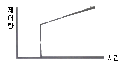

에너지관리산업기사 (2019-03-03 기출문제)
1과목: 열역학 및 연소관리
1. 다음 중 에너지 보존과 가장 관련이 있는 열역학의 법칙은?
- 제0법칙
- 제1법칙
- 제2법칙
- 제3법칙
(정답률: 89%)

2. 이상기체에 대하여 Cp와 Cv의 관계식으로 옳은 것은? (단, Cp는 정압비열, Cv는 정적비열, R은 기체상수이다.)
- Cp=Cv-R
- Cp=Cv+R
- Cp=R-Cv
- R=Cp/Cv
(정답률: 70%)
3. 과열증기에 대한 설명으로 옳은 것은?
- 습포화증기에서 압력을 높인 것이다.
- 동일압력에서 온도를 높인 습포화증기이다.
- 건포화증기를 가열해서 압력을 높인 것이다.
- 건포화증기에 열을 가해 온도를 높인 것이다.
(정답률: 83%)
4. 액체연소장치의 무화요소와 가장거리가 먼 것은?
- 액체의 운동량
- 주위 공기와의 마찰력
- 액체와 기체의 표면장력
- 기체의 비중
(정답률: 72%)
5. 회분이 연소에 미치는 영향에 대한 설명으로 틀린 것은?
- 연소실의 온도를 높인다.
- 통풍에 지장을 주어 연소효율을 저하시킨다.
- 보일러 벽이나 내화벽돌에 부착되어 장치를 손상 시킨다.
- 용융 온도가 낮은 회분은 클린커(clinker)를 발생시켜 통풍을 방해한다.
(정답률: 83%)
6. 체적 0.5m3, 압력 2MPa, 온도 20도씨 인 일정량의 이상기체가 압력 100kPa, 온도 80도씨 가 되면 기체의 체적(m3)은?
- 6
- 8
- 10
- 12
(정답률: 45%)
7. 폴리트로픽 지수가 무한대(n=∞)인 변화는?
- 정온(등온)변화
- 정적(등적)변화
- 정압(등압)변화
- 단열변화
(정답률: 80%)
8. 어떤 물질이 온도변화 없이 상태가 변할 때 방출되거나 흡수되는 열을 무엇이라하는가?
- 현열
- 잠열
- 비열
- 열용량
(정답률: 88%)
9. 보일러에서 댐퍼의 설치목적으로 가장 거리가 먼 것은?
- 통풍력을 조절한다.
- 가스의 흐름을 차단한다.
- 연료 공급량을 조절한다.
- 주연도와 부연도가 있을때 가스 흐름을 전환한다.
(정답률: 73%)
10. 랭킨사이클의 효율을 높이기 위한 방법으로 옳은 것은?
- 보일러의 가열 온도를 높인다.
- 응축기의 응축 온도를 높인다.
- 펌프 소요 일을 증대시킨다.
- 터빈의 출력을 줄인다.
(정답률: 71%)
11. 파형의 강판을 다수 조합한 형태로 된 기수분리기의 형식은?
- 배플형
- 스크러버형
- 사이클론형
- 건조스크린형
(정답률: 72%)
12. 430K에서 500kJ의 열을 공급받아 300K에서 방열시키는 카르노사이클의 열효율과 일량으로 옳은 것은?
- 30.2%, 349kJ
- 30.2%, 151kJ
- 69.8%, 151kJ
- 69.8%, 349kJ
(정답률: 76%)
13. 다음 중 이상기체 상태방정식에서 체적이 절대온도에 비례하게 되는 조건은?
- 밀도가 일정할 때.
- 엔탈피가 일정할 때.
- 비중량이 일정할 때.
- 압력이 일정할 때.
(정답률: 64%)
14. 공기 40kg에 포함된 질소의 질량(kg)은 얼마인가? (단, 공기는 체적비로 질소80%와 산소 20%로 구성되어있다.)
- 25
- 27
- 29
- 31
(정답률: 48%)
15. 다음 변화과정 중에서 엔탈피의 변화량과 열량의 변화량이 같은 경우는 어느 것인가?
- 등온변화과정
- 정적변화과정
- 정압변화과정
- 단열변화과정
(정답률: 47%)
16. 다음 중 중유를 버너로 연소시킬 때 연소상태에 가장 적게 영향을 미치는 것은?
- 황분
- 점도
- 인화점
- 유동점
(정답률: 67%)
17. 연료 중 유황이나 회분은 거의 포함하지 않으나 쉽게 인화하여 화재 및 폭발의 위험이 큰 연료는?
- B-C유
- 코크스
- 중유
- LPG
(정답률: 87%)
18. 다음 중 기체연료 연소장치의 종류가 아닌 것은?
- 계단형
- 포트형
- 저압버너
- 고압버너
(정답률: 81%)
19. 압력 1500kPa, 체적 0.1m3의 기체가 일정 압력 하에 팽창하여 체적이 0.5m3가 되었다. 이 기체가 외부에 한 일(kJ)은 얼마인가?
- 150
- 600
- 750
- 900
(정답률: 59%)
20. 액체연료 공급 라인에 설치하는 여과기의 설치방법에 대한 설명으로 틀린 것은?
- 여과기 전후에 압력계를 부착하여 일정 압력차 이상이면 청소하도록 한다.
- 여과기의 청소를 위해 여과기 2개를 직렬로 설치한다.
- 유량계와 같이 설치하는 경우 연료가 여과기를 거쳐 유량계로 가도록 한다.
- 여과기의 여과망은 유량계보다 버너 입구측에 더 가는 눈의 것을 사용한다.
(정답률: 82%)
2과목: 계측 및 에너지진단
21. 계단상 입력(STEP INPUT)변화에 대한 아래 그림은 어떤 제어동작의 특성을 나타낸것인가?

- 적분동작
- 비례,적분.미분동작
- 비례,미분동작
- 비례,적분동작
(정답률: 69%)
22. 다음 중 사용온도가 가장 높은경우에 적합한 보호관으로 급냉,급열에 약한 것은?
- 자기관
- 석영관
- 황동강관
- 내열강관
(정답률: 55%)
23. 보일러 효율 80%, 실제 증발량 4 t/h, 발생증기 엔탈피 650 kcal/kgf, 급수 엔탈피 10 kcal/kgf, 연료 저위 발열량 9500 kcal/kgf 일 때, 이 보일러의 시간당 연료 소비량은 약 몇 kgf/h 인가?
- 193
- 264
- 337
- 394
(정답률: 51%)
24. 측정계기의 감도가 높을 때 나타나는 특성은?
- 측정범위가 넓어지고 정도가 좋다.
- 넓은 범위에서 사용이 가능하다.
- 측정시간이 짧아지고 측정범위가 좁아진다.
- 측정시간이 길어지고 측정범위가 좁아진다.
(정답률: 67%)
25. 계측계의 특성으로 계측에 있어 변환기의 선정 또는 측정의 참값을 판단하는 계의 특성중 정특성에 해당하는 것은?
- 감도
- 과도특성
- 유량특성
- 시간지연과 동 오차
(정답률: 69%)
26. 금속이나 반도체의 온도변화로 전기저항이 변하는 원리를 이용한 전기저항 온도계의 종류가 아닌 것은?
- 백금저항 온도계
- 니켈저항 온도계
- 서미스터 온도계
- 베크만 온도계
(정답률: 71%)
27. 열팽창계수가 서로 다른 박판을 사용하여 온도 변화에 따라 휘어지는 정도를 이용한 온도계는?
- 제겔콘 온도계
- 바이메탈 온도계
- 알코올 온도계
- 수은 온도계
(정답률: 82%)
28. 다음 중 고체연료의 열량측정을 위한 원소분석 성분으로 가장 거리가 먼 것은?
- 탄소
- 수소
- 질소
- 휘발분
(정답률: 67%)
29. 연소실 열발생률의 단위는 어느 것인가?
- kcal/m3h
- kcal/mh
- kg/m2h
- kg/m3h
(정답률: 76%)
30. 액주식 압력계 중 하나인 U자관 압력계에 사용되는 유체의 구비조건에 대한 설명으로 틀린 것은?
- 점성이 작아야 한다.
- 휘발성과 흡습성이 작아야 한다.
- 모세관 현상 및 표면장력이 커야 한다.
- 온도에 따른 밀도 변화가 작아야 한다.
(정답률: 77%)
31. 계측기기의 구비조건으로 적절하지 않은 것은?
- 연속 측정이 가능하여야 한다.
- 유지보수가 어렵고 신뢰도가 높아야 한다.
- 정도가 좋고 구조가 간단하여야 한다.
- 설치장소의 주위 조건에 대하여 내구성이 있어야 한다.
(정답률: 88%)
32. 프로세스제어계 내에 시간지연이 크거나 외란이 심한 경우에 사용하는 제어는?
- 프로세서제어
- 캐스케이드제어
- 프로그램제어
- 비율제어
(정답률: 80%)
33. 보일러의 증발계수 계산공식으로 알맞은 것은? (단, h“:발생증기의 엔탈피(kcal/kgf), h:급수의 엔탈피(kcal/kgf)이다.)
- 증발계수=(h“+h)/539
- 증발계수=(h“-h)/539
- 증발계수=539/(h+h“)
- 증발계수=539/(h-h“)
(정답률: 80%)
34. 안지름이 16cm인 관속을 흐르는 물의 유속이 24m/s 라면 유량은 몇 m3/s 인가?
- 0.24
- 0.36
- 0.48
- 0.60
(정답률: 57%)
35. 다음의 가스분석법 중에서 정량범위가 가장 넓은 것은?
- 도전율법
- 자기식법
- 열전도율법
- 가스크로마토그래피법
(정답률: 52%)
36. 한 시간 동안 연도로 배기되는 가스량이 300kg, 배기가스 온도 240도씨, 가스의 평균비열이 0.32kcal/kg`도씨 이고 외기 온도가 -10도씨 일 때, 배기가스에 의한 손실열량은 약 몇kcal/h인가?
- 14100
- 24000
- 32500
- 38400
(정답률: 67%)
37. 다음 중 차압식 유량계의 종류로 압력손실이 가장 적은 유량측정 방식은?
- 터빈형
- 플로트형
- 벤튜리관
- 오발기어형 유량계
(정답률: 68%)
38. 부르동관 압력계에 대한 설명으로 틀린 것은?
- 얇은 금속이나 고무 등의 탄성 변형을 이용하여 압력을 측정한다.
- 탄성식 압력계의 일종으로 고압의 증기 압력 측정이 가능하다.
- 부르동관이 손상되는 것을 방지하기 위하여 압력계 입구 쪽에 사이폰관을 설치한다.
- 압력계 지침을 움직이는 부분은 기어나 링의 형태로 되어 있다.
(정답률: 63%)
39. 보일러 연소특성으로 어떤 조건이 충족되지 않으면 다음 동작이 중지되는 인터록(InterLock)의 종류가 아닌 것은?
- 온오프 인터록
- 불착화 인터록
- 저수위 인터록
- 프리퍼지 인터록
(정답률: 73%)
40. 다음 중 차압을 일정하게 하고 가변 단면적을 이용하여 유량을 측정하는 유량계는?
- 노즐
- 피토관
- 모세관
- 로터미터
(정답률: 75%)
3과목: 열설비구조 및 시공
41. 철강제 가열로의 연소가스는 어떤 상태로 유지되어야 하는가?
- SO2 가스가 많아야한다
- CO 가스가 검출되어서는 안된다.
- 환원성 분위기어야한다.
- 산성 분위기이어야한다
(정답률: 79%)
42. 에너지이용 합리화법에 따라 검사대상기기관리자의 선임기준에 관한 설명으로 옳은 것은?
- 검사대상기기관리자의 선임기준은 1구역마다 1명이상으로 한다.
- 1구역은 검사대상기기 1대를 기준으로 정한다.
- 중앙통제설비를 갖춘 시설은 관리자 선임이 면제된다.
- 압력용기의 경우 1구역은 검사대상기기관리자 2명이 관리할 수 있는 범위로 한다.
(정답률: 71%)
43. 다음은 과열기에서 증기의 유동방향과 연소가스의 유동방향에 따른 분류이다. 고온의 연소가스와 고온의 증기가 접촉하여 열효율은 양호하나 고온에서 배열관의 손상이 큰 특징이 있는 과열기의 형식은?
- 병행류식
- 대향류식
- 혼류식
- 평행류식
(정답률: 73%)
44. 에너지이용 합리화법에서 정한 검사대상기기의 검사 유효기간이 없는 검사의 종류는?
- 설치검사
- 구조검사
- 계속사용검사
- 설치장소변경검사
(정답률: 55%)
45. 공업로의 조업방법 중 연속식 재료 반송방식이 아닌 것은?
- 푸셔형
- 워킹빔형
- 엘리베이터형
- 회전노상형
(정답률: 72%)
46. 보일러 종류에 따른 특징에 관한 설명으로 틀린 것은?
- 관류보일러는 보일러 드럼과 대형 헤더가 있어 작은 전열관을 사용할 수 있기 때문에 중량이 무거워진다.
- 수관보일러는 노통보일러에 비하여 전열면적이 크므로 증발량이 크다.
- 수관보일러는 증발량에 비해 수부가 적어 부하변동에 따른 압력변화가 크다.
- 원통보일러는 보유수량이 많아 파열사고 발생 시 위험성이 크다.
(정답률: 61%)
47. 검사대상기기에 대해 개조검사의 적용대상에 해당되지 않는 것은?
- 연료를 변경하는 경우
- 연소방법을 변경하는 경우
- 온수보일러를 증기보일러로 개조하는 경우
- 보일러 섹션의 증감에 의하여 용량을 변경 하는 경우
(정답률: 73%)
48. 에너지 이용 합리화법에 따라 검사대상기기의 계속사용검사신청서를 검사유효기간 만료 최대 며칠 전까지 제출해야 하는가?
- 7일전
- 10일전
- 15일전
- 30일전
(정답률: 61%)
49. 탄력을 이용하여 분출압력을 조정하는 방식으로써 보일러에 진동이 있거나 충격이 가해져도 안전하게 작동하는 안전밸브는?
- 추식 안전밸브
- 레버식 안전밸브
- 지렛대식 안전밸브
- 스프링식 안전밸브
(정답률: 87%)
50. 노통보일러에서 브리징스페이스 의 간격을 적게 할 경우 어떤 장해가 발생하기 쉬운가?
- 불완전 연소가 되기 쉽다.
- 증기 압력이 낮아지기 쉽다.
- 서징현상이 발생되기 쉽다.
- 구루빙 현상이 발생되기 쉽다.
(정답률: 69%)
51. 열기성 내화물의 주원료가 아닌 것은?
- 마그네시아
- 돌로마이트
- 실리카
- 포스테라이트
(정답률: 68%)
52. 다음 중 가스 절단에 속하지 않는 것은?
- 분말 절단
- 플라즈마 제트 절단
- 가스 가우징
- 스카핑
(정답률: 71%)
53. 내벽은 내화벽돌로 두께220mm, 열전도율 1.1kcal/m*h*도씨, 중간벽은 단열벽돌로 두께 9cm, 열전도율 0.12kcal/m*h*도씨, 외벽은 붉은 벽돌로 두께20cm,열전도율 0.8kcal/m*h*도씨 로 되어 있는ㄴ 노벽이 있다. 내벽 표면의 온도가 1000도씨 일 때, 외벽의 표면온도는? (단, 외벽 주위온도는 20도씨, 외벽 표면의 열전달률은 7 kcal/m2*h*도씨 로 한다.)
- 104
- 124
- 141
- 267
(정답률: 43%)
54. 아크 용접기의 구비조건으로 틀린 것은?
- 사용 중에 온도상승이 커야 한다.
- 가격이 저렴하고 사용 유지비가 적게 들어야 한다.
- 아크 발생이 잘 되도록 무부하 전압이 유지되어야 한다.
- 전류 조정이 용이하고 일정한 전류가 흘러야 한다.
(정답률: 81%)
55. 에너지이용 합리화법에 따라 검사를 받아야하는 검사대상기기 검사의 종류에 해당 되지 않는 것은?
- 설치검사
- 자체검사
- 개조검사
- 설치장소 변경검사
(정답률: 73%)
56. 노통보일러와 비교하여 연관보일러의 특징에 대한 설명으로 틀린 것은?
- 보일러 내부 청소가 간단하다
- 전열면적이 크므로 중량당 증발량이 크다.
- 증기발생에 소요시간이 짧다.
- 보유수량이 적다.
(정답률: 65%)
57. 에너지 이용 합리화법에 따라 열사용기자재 중 소형 온수보일러는 최고사용압력 얼마 이하의 온수를 발생하는 보일러를 의미하는가?
- 0.35Mpa 이하
- 0.5Mpa 이하
- 0.65Mpa 이하
- 0,.85Mpa 이하
(정답률: 81%)
58. 보일러 관의 내경이 2.5cmㅡ 외경이 3.34cm인 강관(k=54W/m2 * 도씨)의 외부벽면(외경)을 기준으로 한 열관류율 (W/m2 * 도씨)은? (단, 관 내부의 열전달계수는 1800W/m2 * 도씨 이고, 관 외부의 열전달계수는 1250 W/m2 * 도씨 이다.)
- 612.82
- 725.43
- 832.52
- 926.75
(정답률: 26%)
59. 나사식 가단 주철제 관 이음쇠에서 유체의 상태가 300도씨 이하의 증기, 공기, 가스 및 기름일 경우 최고사용압력 기준으로 옳은 것은?
- 1.4MPa
- 2.0MPa
- 1.0MPa
- 2.5MPa
(정답률: 46%)
60. 원심펌프가 회전속도 600rpm에서 분당 6m3의 수량을 방출하고 있다. 이 펌프의 회전속도를 900rpm으로 운전하면 토출수량(m3/min)은 얼마가 되겠는가?
- 3.97
- 9
- 12
- 13.5
(정답률: 62%)
4과목: 열설비취급 및 안전관리
61. 다음 중 역귀환 배관방식이 사용되는 난방설비는?
- 증기난방
- 온풍난방
- 온수난방
- 전기난방
(정답률: 74%)
62. 증기트랩을 사용하는 이유로 가장 적합한 것은?
- 증기배관 내의 수격작용을 방지한다.
- 증기의 송기량을 증가시킨다.
- 증기배관의 강도를 증가시킨다
- 증기발생을 왕성하게 해준다.
(정답률: 81%)
63. 보일러의 분출밸브 크기와 개수에 대한 설명으로 틀린 것은?
- 정상 시 보유수량 400kg 이하의 강제순환보일러에는 열린 상태에서 전개하는데 회전축을 적어도 3회전 이상 회전을 요한느 분출밸브 1개를 설치하여야한다.
- 최고사용압력 0.7MPa 이상의 보일러의 분출관에는 분출밸브 2개 또는 분출밸브와 분출코크를 직렬로 갖추어야 한다.
- 2개 이상의 보일러에서 분출관을 공동으로 하여서는 안 된다.
- 전열면적이 10m2 이하인 보일러에서 분출밸브의 크기는 호칭지름 20mm 이상으로 할 수 있다.
(정답률: 53%)
64. 수질의 용어중 ppb(parts per billion)에 대한 설명으로 옳은 것은?
- 물1kg중에 함유되어 있는 불순물의 양을 mg으로 표시한 것이다.
- 물1 ton 중에 함유되어 있는 불순물의 양을 mg 으로 표시한 것이다.
- 물1 kg 중에 함유되어 있는 불순물의 양을 g으로 표시한 것이다.
- 물 1ton 중에 함유되어 있는 불순물의 양을 g으로 표시한 것이다.
(정답률: 67%)
65. 보일러를 휴지상태로 보존할 때 부식을 방지하기 위해 채워두는 가스로 가장 적절한 것은?
- 아황산가스
- 이산화탄소
- 질소가스
- 헬륨가스
(정답률: 83%)
66. 에너지이용 합리화법에 따라 에너지다소비사업자가 산업통상자원부령으로 정하는 바에 따라 해당 시,도지사에 신고해야 할 사항이 아닌 것은?
- 전년도의 분기별 에너지사용량
- 해당 연도의 수입,지출 예산서
- 해당 연도의 제품생산예정량
- 전년도의 분기별 에너지이용 합리화 실적
(정답률: 63%)
67. 방열계수가 8,5kcal/m2*h*도씨 인 방열기에서 방열기 입구온도 85도씨, 실내온도 20도씨, 방열기 출구온도 65도씨이다. 이 방열기의 방열량(kcal/m2*h)은?
- 450.8
- 467.5
- 386.7
- 432.2
(정답률: 51%)
68. 다음 중 공기비가 작을 경우 연소에 미치는 영향으로 틀린 것은?
- 불완전 연소가 되어 매연 발생이 심하다.
- 연소가스 중 SO2의 함유량이 많아져 저온부식이 촉진된다.
- 미연소에 의한 열손실이 증가한다.
- 미연소 가스로 인한 폭발사고가 일어나기 쉽다.
(정답률: 66%)
69. 에너지법상 지역에너지계획은 5년마다 수립하여야 한다. 이 지역에너지 계획에 포함되어야 할 사항은?
- 국내외 에너지 수요와 공급추이 및 전망에 관한 사항
- 에너지의 안전관리를 위한 대책에 관한 사항
- 에너지 관련 전문인력의 양성 등에 관한 사항
- 에너지의 안정적 공급을 위한 대책에 관한 사항
(정답률: 65%)
70. 화학 세관에서 사용하는 유기산에 해당되지 않는 것은?
- 인산
- 초산
- 구연산
- 옥살산
(정답률: 69%)
71. 에너지이용 합리화법에 따라 검사대상기기설치자는 검사대상기기로 인한 사고가 발생한 경우 한국에너지공단에 통보하여야 한다. 그 통보를 하여야 하는 사고의 종류로 가장 거리가 먼 것은?
- 사람이 사망한 사고
- 사람이 부상당한 사고
- 화재 또는 폭발 사고
- 가스 누출사고
(정답률: 76%)
72. 중기난방에서 방열기 안에서 생긴 응축수를 보일러에 환수할 때 응축수와 증기가 동일한 관을 흐르도록 하는 방식은?
- 단관식
- 복합식
- 복관식
- 혼수식
(정답률: 74%)
73. 보일러 이상연소 중 불완전연소의 원인으로 가장 거리가 먼 것은?
- 연소용 공기량의 부족할 경우
- 연소속도가 적절하지 않은 경우
- 버너로부터 분무입자가 작을경우
- 분무연료와 연소용 공기와의 혼합이 불량할 경우
(정답률: 75%)
74. 급수 중에 용존산소가 보일러에 주는 가장 큰 영향은?
- 포밍을 일으킨다.
- 강판, 강관을 부식시킨다.
- 오존을 발생시킨다.
- 습증기를 발생시킨다.
(정답률: 76%)
75. 보일러 산세관 시 사용하는 부식 억제제의 구비조건으로 틀린 것은?
- 점식발생이 없을 것
- 부식 억제능력이 클 것
- 물에 대한 용해도가 작을 것
- 세관액의 온도농도에 대한 영향이 적을 것
(정답률: 83%)
76. 보일러 수처리에서 이온교환체와 관계가 있는 것은?
- 천연산 제오라이트
- 탄산소다
- 히드라진
- 황산마그네슘
(정답률: 72%)
77. 에너지이용 합리화법에 따른 특정열사용기자재 및 그 설치*시공범위에 속하지 않는 것은?
- 강철제 보일러의 설치
- 태양열 집열기의 세관
- 3종 압력공기의 배관
- 연속식 유리용융가마의설치를 위한 시공
(정답률: 58%)
78. 보일러를 옥내에 설치하는 경우 설치 시 유의사항으로 틀린 것은? (단, 소형보일러 및 주철제보일러는 제외한다.)
- 도시가스를 사용하는 보일러실에서는 환기구를 가능한 한 낮게 설치하여 가스가 누설되었을 때 체류하지 않는 구조이어야 한다.
- 보일러 동체 최상부로부터 천정,배관 등 보일러 상부에 있는 구조물까지의 거리는 1.2m 이상이어야 한다.
- 보일러 동체에서 벽, 배관, 기타 보일러 측부에 있는 구조물까지 거리는 0.45m 이상이어야 한다.
- 보일러 및 보일러에 누설된 금속제의 굵 또는 연도의 외측으로부터 0.3m 이내에 있는 가연성 물체에 대하여는 금속 이외의 불연성 재료로 피복하여야 한다.
(정답률: 63%)
79. 보일러 급수처리의 목적으로 가장 거리가 먼 것은?
- 응결수 증가 방지
- 전열면의 스케일의 생성 방지
- 프라이밍, 포밍 등의 발생방지
- 점석 등의 내면 부식 방지
(정답률: 62%)
80. 에너지이용 합리화법에 따라 산업통상자원부장관에게 에너지 사용계획을 제출하여야 하는 사업주관자가 실시하는 사업의 종류가 아닌 것은?
- 에너지 개발사업
- 관광단지 개발사업
- 철도 건설사업
- 주택 개발사업
(정답률: 77%)
제1법칙은 에너지 보존의 법칙으로, 에너지는 생성되거나 소멸되지 않고 변환만 가능하다는 것을 말합니다. 따라서 시스템 내부에서 일어나는 에너지 변화의 양은 항상 일정하며, 에너지의 총량은 변하지 않습니다. 이는 에너지 보존의 원리를 나타내며, 열역학에서 가장 기본적인 법칙 중 하나입니다.